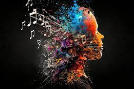

MUSIC
Music is generally defined as the art of arranging sound to create some combination of form, harmony, melody, rhythm, or otherwise expressive content.[1][2][3] Definitions of music vary depending on culture,[4] though it is an aspect of all human societies and a cultural universal.[5] While scholars agree that music is defined by a few specific elements, there is no consensus on their precise definitions.[6] The creation of music is commonly divided into musical composition, musical improvisation, and musical performance,[7] though the topic itself extends into academic disciplines, criticism, philosophy, and psychology. Music may be performed or improvised using a vast range of instruments, including the human voice

DANCE
Dance is an art form consisting of sequences of body movements with aesthetic and often symbolic value, either improvised or purposefully selected.[nb 1] Dance can be categorized and described by its choreography, by its repertoire of movements or by its historical period or place of origin.[3] Dance is typically performed with musical accompaniment, and sometimes with the dancer simultaneously using a musical instrument themselves.

PHOTOGRAPHY
Photography is the art, application, and practice of creating images by recording light, either electronically by means of an image sensor, or chemically by means of a light-sensitive material such as photographic film. It is employed in many fields of science, manufacturing (e.g., photolithography), and business, as well as its more direct uses for art, film and video production, recreational purposes, hobby, and mass communication.

PAINTING
Painting is the practice of applying paint, pigment, color or other medium to a solid surface (called the "matrix"[1] or "support").[2] The medium is commonly applied to the base with a brush, but other implements, such as knives, sponges, and airbrushes, can be used. In art, the term "painting" describes both the act and the result of the action (the final work is called "a painting"). The support for paintings includes such surfaces as walls, paper, canvas, wood, glass, lacquer, pottery, leaf, copper and concrete, and the painting may incorporate multiple other materials, including sand, clay, paper, plaster, gold leaf, and even whole objects.